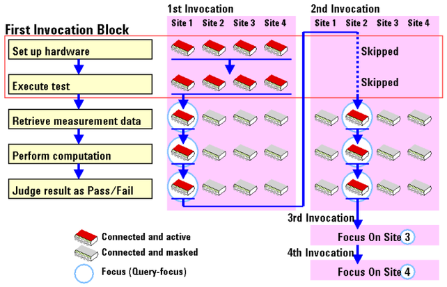
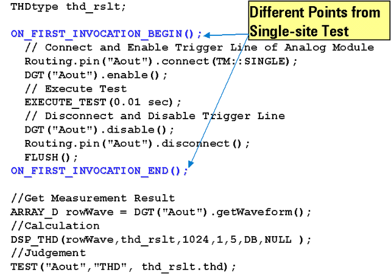
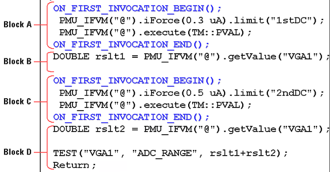
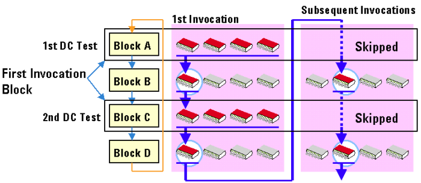
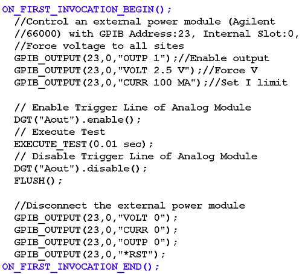

Parallel Execution
In multisite testing, the test method program can perform the following actions for all sites in parallel:
- Set up hardware
- Execute test
For parallel execution of the above, Setup and Execution APIs must be enclosed by a pair of the following APIs:
A block enclosed by these APIs is called the first-invocation block.
The figure below shows the behavior of program execution in parallel execution.

In multisite testing, the system generates the setup conditions for additional sites based on the primary setups, and they are downloaded automatically.
If you modify any condition of the setup data in the first-invocation block, the condition data for all sites will be overridden as well, and then activated.
However, if you wish to use different setup data for different sites, see the section Controlling the Setup/Query-Focus Automatically.
The primary setups are activated for all sites when the following APIs are executed in the first-invocation block.
- EXECUTE_TEST()
- START_TEST()
- DIGITAL_CAPTURE_TEST()
- FUNCTIONAL_TEST()
The following APIs will become obsolete soon:
- SPEC_SEARCH(specName, specType).execute()
- Replace this with the API: SEARCH_FUNC_TASK
- DPS_VFIM(pin).execute()
- This is not supported for DC Scale cards, use DPS_TASK instead
Note that any modification of the setup condition outside the first-invocation block is also valid for all sites.
However, the modification is executed sequentially each time the program is executed for all sites. That is, all it does is slow down the execution of the testmethod-based testsuite.
Note that you can set up different setup data for each site. For more information, see Site-Specific Setup.
The following is an example of a typical program for parallel execution.

In the above example, the first execution of the program achieves setup and test (measurement) for all sites in parallel, then gets the measurement result for the first tested site, calculates the total harmonic distortion (THD) value from the measurement result, and judges the THD value as pass/fail. Subsequent executions start from when the measurement result is retrieved for the current site.
You can also define multiple first-invocation blocks in a test method program. For example, if you need two DC tests in a testmethod-based testsuite, define two first-invocation blocks for two measurements such as below. The figure below shows the execution behavior of this example program.


The first-invocation block will be executed once only at the first execution of the program. You can use this feature wisely.
If you need to execute a certain part of your program once for all sites, enter the part into the first-invocation block.
For example, if you control a GPIB instrument once before multisite testing, enter GPIB APIs in the first-invocation block such as below. Hence, control of the instrument will be executed once only at the first execution of the program. Note that the GPIB APIs do not depend on the site information.

Functional changes
- Introduced before SmarTest 6.3.2